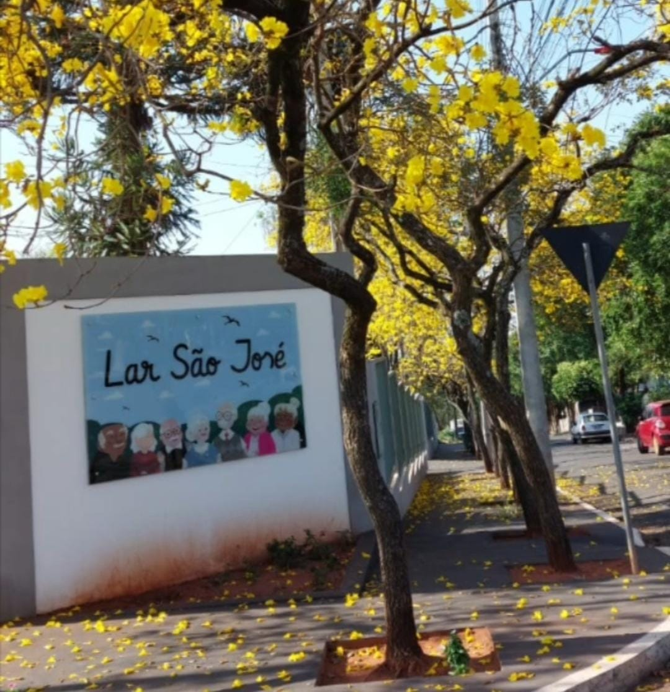
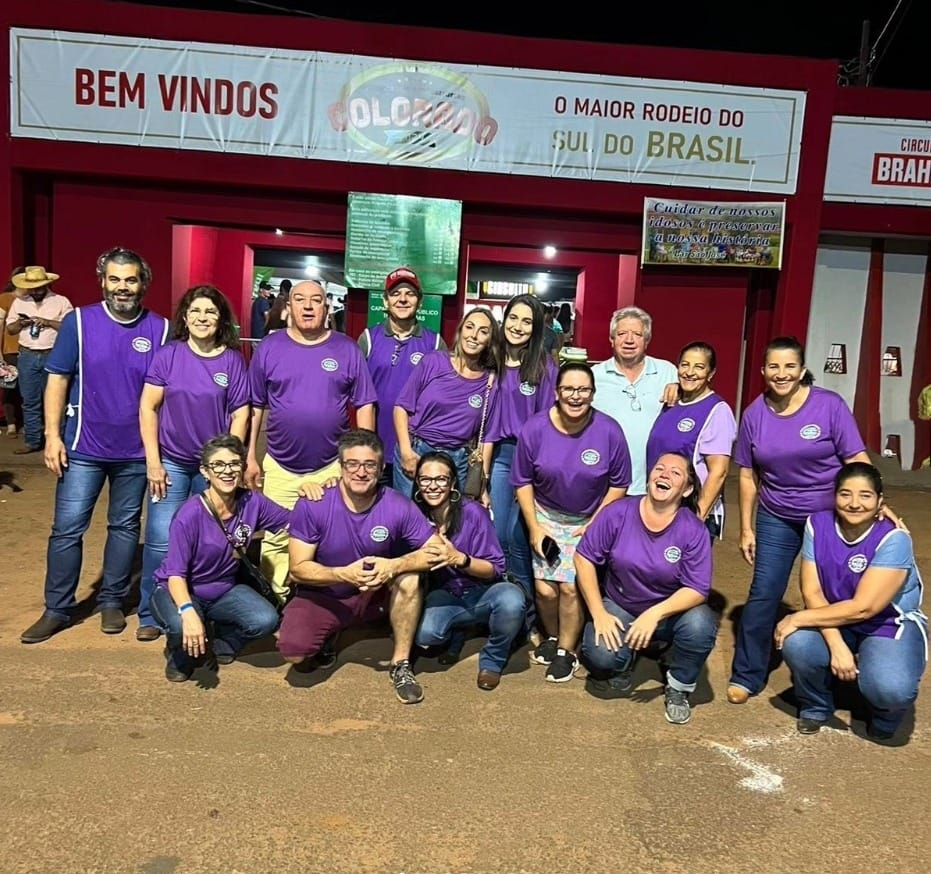

ACPIC Lar São José
Início
Sobre Nós
Galeria
Doações
Equipe
Contato
Galeria
Fotos e vídeo da nossa estrutura. Reforma realizada em 06/jul/2021.

Ambiente de convivência e cuidado.

Espaços preparados para acolhimento.
Melhorias estruturais do Lar São José.
Seu navegador não suporta a tag de vídeo.
Vídeo institucional da estrutura.